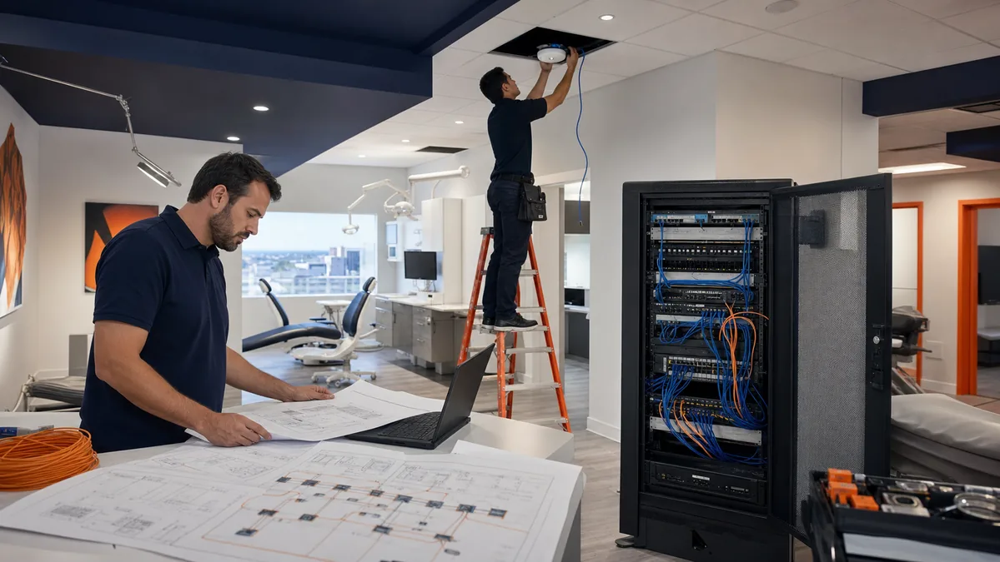

Dental offices in Cypress and northwest Houston face the same technology questions as practices anywhere: reliable computers, secure networks, working backups. A few local conditions deserve extra planning, though. Many practices sit in newer retail centers where internet options vary from one building to the next. Summer storms and hurricane season can take power out for long stretches. Some sites sit near creeks and bayous that flood.
This guide covers those local pieces for practices in Cypress, Jersey Village, Copperfield, Willowbrook, Tomball and nearby areas, including ZIP codes 77429, 77433, 77095, 77065, 77070, 77041 and 77377. It assumes the basics are in place. For those, see our dental office network setup guide.
Check internet options before you sign a lease
Two suites in the same area can have very different internet choices. A new building may not have fiber yet, or the provider may need weeks to bring service in. Before you commit to a space, look the address up on the FCC National Broadband Map, which shows the providers and technologies reported for each location. FCC: National Broadband Map Treat the map as a starting list, then confirm with each provider for your exact suite, including installation timing.
Ask the landlord where the building's telecom room is, which carriers already serve it, and whether conduit runs to your suite. Order service as early as possible. Internet that is not live by move-in week is one of the most common reasons an opening slips. Our new dental office technology timeline shows where internet orders fit in the schedule.
Plan a second internet path
If your practice-management system, imaging, phones or payments rely on the internet, one connection is a single point of failure. A second connection works best when it uses a different provider and, ideally, a different technology, such as fiber plus cable, or a wired connection plus cellular. Two services that share the same cable into the building can fail together.
A firewall that supports automatic failover can move traffic to the backup connection when the main one drops. Test it on a schedule, not only when the main line fails. Our backup internet failover test guide walks through a safe test.
Prepare for power outages
Most of the Houston area is served by CenterPoint Energy's lines. CenterPoint offers an online outage tracker and alert sign-up, which are worth registering for at the practice address. CenterPoint: Stay Informed About Outages Hurricane Beryl in July 2024 was a reminder that outages in this region can last for days, not hours.
From an IT standpoint, plan for three things:
- Battery backup (UPS) for the server and network equipment. Open Dental describes a UPS as optional but recommended to prevent data loss. Open Dental: Computer Requirements The goal is a clean shutdown, not running all day on batteries.
- A shutdown order. Workstations first, then the server, then network equipment. Write it down and tape it inside the network closet door.
- A startup order. Network equipment first, then the server, then workstations. Check that the practice-management software, imaging and phones work before the first patient.
Battery backups wear out. Check their status and test them at least once a year. If you are considering a generator, involve a licensed electrician and your landlord, and tell IT which circuits it will power.
Storm-season checklist
The Atlantic hurricane season runs from June through November, and severe thunderstorms happen year round. Ready.gov's hurricane guidance and business continuity planning tools are good starting points for the non-IT side of planning. Ready.gov: Hurricanes Ready.gov: Business Continuity Planning
When a storm is forecast, the IT side looks like this:
- Confirm the most recent backup finished and that an off-site or cloud copy exists
- Confirm who has remote access to check the office systems after the storm
- Print the contact sheet: IT provider, software vendors, internet, phone and utility
- Move computers, drives and network equipment off the floor in suites with any flood history
- Shut down equipment in the planned order if the office will close
- Take photos of the network closet and server so you can spot damage later
Check your suite's flood risk before you need to. FEMA's Flood Map Service Center shows mapped flood zones by address. FEMA: Flood Map Service Center The Harris County Flood Warning System shows rainfall and stream levels at gauges across the county, including along Cypress Creek. Harris County Flood Warning System A server closet at floor level in a flood-prone building may need to be relocated.
After the storm
Do not just switch everything on and hope. Bring equipment up in order, then check:
- Does the server start cleanly, and is the practice-management database available?
- Do imaging, sensors and cameras work in each operatory?
- Are phones and internet working, and is the office on its primary or backup connection?
- Did the backup system resume, and did any job fail while power was out?
- Are any battery backups showing alarms?
Record anything that failed so it can be repaired before the next storm. If the office will be closed for an extended period, follow your dental practice downtime plan for scheduling, patient communication and reconciling work done on paper.
What needs on-site help
Many problems can be handled remotely when the internet is up: user accounts, software issues, monitoring and vendor calls. Storm and power problems often need someone in the building: a failed battery backup, a switch that will not come back up, water damage, or a sensor connection that needs checking. Make sure your IT provider can send a technician to your area, and that someone at the practice can let them in.
Odyssey provides on-site dental IT support in Cypress and northwest Houston as part of its Greater Houston dental IT service; contact Odyssey to review your office's storm and outage readiness.
Sources
Related guides

Dental Practice Downtime Plan: Keep Patient Care Moving During an IT Outage
Learn More